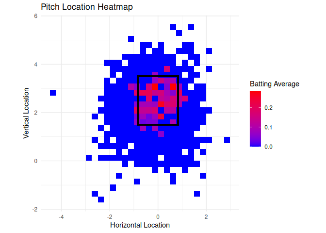
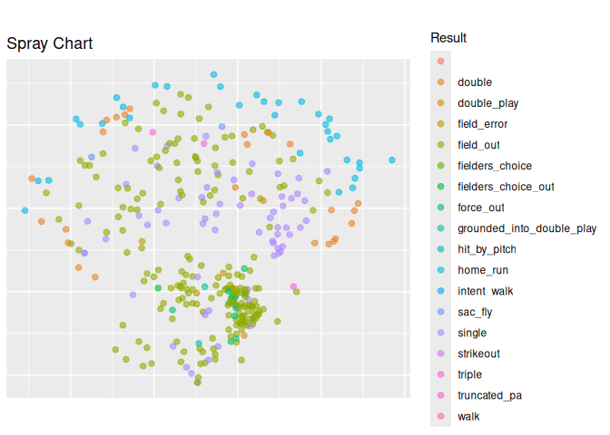

The goal of baseballvizR is to provide functions to easily digest baseball statistics taken from raw statcast data.
Installation
To use this package you must install the devtools package followed by the development version of baseballr in that order before you can install baseballvizR. If you do not install in this order, the functions will not run because they rely on the development version of baseballr. When installing the packages, it may notify you that there are available updates to the packages. You want to update all of them. You can install the development version of baseballvizR from GitHub with:
install.packages("remotes")
install.packages("devtools")
devtools::install_github("BillPetti/baseballr")
devtools::install_github("ADC-405-S26/baseballvizR", force = TRUE)No Dataset
There is no dataset added to this package. Each function in this package utilizes ‘baseballr’ functions to webscrape data every time a function in this package is run. Because each function scrapes the data on its own, there is no need for a dataset to run tests with.
Example
This is a basic example which shows you how to display hitter data:
plot_zone_heatmap example
plot_zone_heatmap("Juan","Soto", "2024-05-19", "2025-06-05", playerIndex = 6)
#> ── Player ID Lookup from the Chadwick Bureau's public register of baseball playe
#> ℹ Data updated: 2026-05-27 01:55:33 UTC
#> # A tibble: 6 × 11
#> first_name last_name given_name name_suffix nick_name birth_year
#> <chr> <chr> <chr> <chr> <chr> <int>
#> 1 Juan DeSoto Juan Enrique "" "" 1962
#> 2 Juan Soto Juan H. "" "" 1990
#> 3 Juan Soto Juan Ruddy "" "" 2003
#> 4 Juan Soto Juan A. "" "" 1972
#> 5 Juan DeSoto Juan "" "" NA
#> 6 Juan Soto Juan Jose "" "" 1998
#> # ℹ 5 more variables: mlb_played_first <int>, mlbam_id <int>,
#> # retrosheet_id <chr>, bbref_id <chr>, fangraphs_id <int>
#> Warning: Removed 28 rows containing non-finite outside the scale range
#> (`stat_summary2d()`).
plot_spray_chart example
plot_spray_chart("Juan","Soto", "2024-05-19", "2025-06-05", playerIndex = 6)
#> ── Player ID Lookup from the Chadwick Bureau's public register of baseball playe
#> ℹ Data updated: 2026-05-27 01:55:40 UTC
#> # A tibble: 6 × 11
#> first_name last_name given_name name_suffix nick_name birth_year
#> <chr> <chr> <chr> <chr> <chr> <int>
#> 1 Juan DeSoto Juan Enrique "" "" 1962
#> 2 Juan Soto Juan H. "" "" 1990
#> 3 Juan Soto Juan Ruddy "" "" 2003
#> 4 Juan Soto Juan A. "" "" 1972
#> 5 Juan DeSoto Juan "" "" NA
#> 6 Juan Soto Juan Jose "" "" 1998
#> # ℹ 5 more variables: mlb_played_first <int>, mlbam_id <int>,
#> # retrosheet_id <chr>, bbref_id <chr>, fangraphs_id <int>
#> Warning: Removed 2035 rows containing missing values or values outside the scale range
#> (`geom_point()`).
calculate_hitter_profile example
calculate_hitter_profile("Juan","Soto", "2024-05-19", "2025-06-05", playerIndex = 6)
#> ── Player ID Lookup from the Chadwick Bureau's public register of baseball playe
#> ℹ Data updated: 2026-05-27 01:55:46 UTC
#> # A tibble: 6 × 11
#> first_name last_name given_name name_suffix nick_name birth_year
#> <chr> <chr> <chr> <chr> <chr> <int>
#> 1 Juan DeSoto Juan Enrique "" "" 1962
#> 2 Juan Soto Juan H. "" "" 1990
#> 3 Juan Soto Juan Ruddy "" "" 2003
#> 4 Juan Soto Juan A. "" "" 1972
#> 5 Juan DeSoto Juan "" "" NA
#> 6 Juan Soto Juan Jose "" "" 1998
#> # ℹ 5 more variables: mlb_played_first <int>, mlbam_id <int>,
#> # retrosheet_id <chr>, bbref_id <chr>, fangraphs_id <int>
#> # A tibble: 1 × 11
#> Hits HRs Walks IntentionalWalk HitByPitch StrikeOut FieldOut DoublePlay
#> <dbl> <dbl> <dbl> <dbl> <dbl> <dbl> <dbl> <dbl>
#> 1 125 34 108 4 3 98 198 6
#> # ℹ 3 more variables: ForceOut <dbl>, SacFly <dbl>, FielderError <dbl>